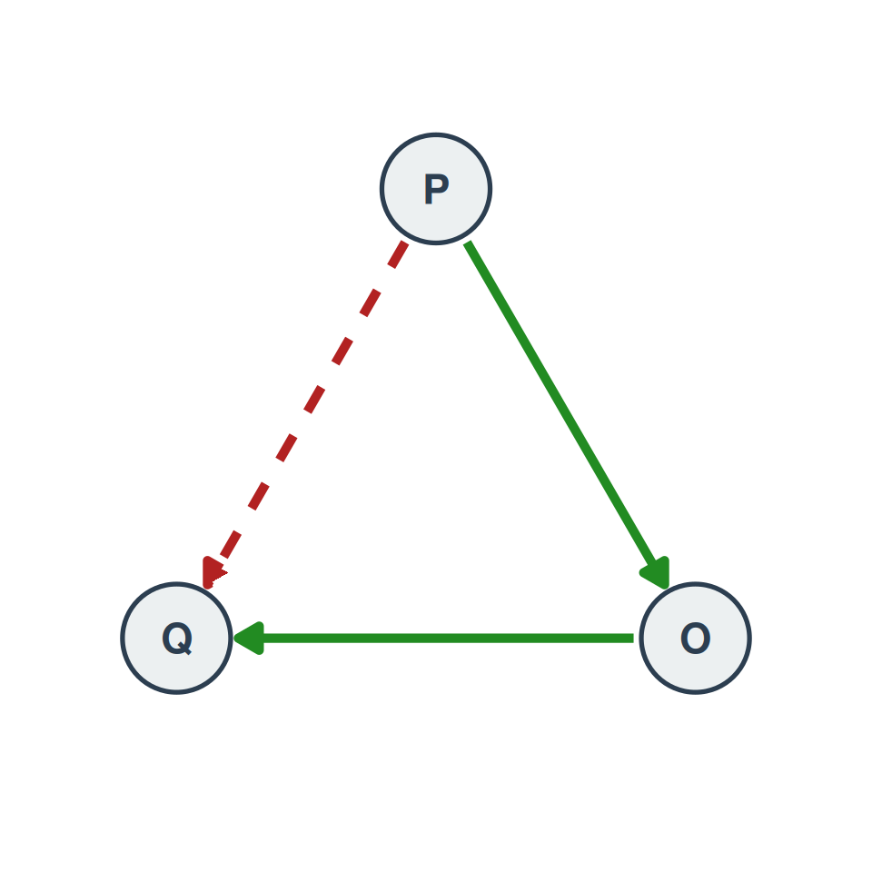
Balance Theory and Signed Graphs
The Structure and Dynamics of Valenced Networks
Part 1: Dyadic Balance Theory
Balance Theory and Signed Graphs
The Local and Global Dynamics of Valenced Networks
- Relationships are not just present or absent; they carry emotional valence.
- Balance Theory is the foundational framework linking:
- Local, psychological micro-motives.
- Global, macro-structural network patterns (like polarization).
- Today we will cover: Dyadic Balance, Signed Graphs, Triadic Balance, Structural Balance, and Clusterability.
Dyadic Balance: From Similarities to Interactions
- Ideas of dyadic balance were first described in a famous paper written by Fritz Heider in 1946.
- Ties differ based on whether they are based on:
- Similarities.
- Interactions.
- The basic principle is that people seek balance between similarities and interactions.
- People tend to interact with people who are similar to them.
- If \(\alpha\) and \(\beta\) are two people, \(S\) is a tie based on similarity and \(R\) is a tie based on interaction:
\[\alpha S \beta \rightarrow \alpha R \beta\]
Dyadic Balance: Reading the Principle
- \(\alpha S \beta \rightarrow \alpha R \beta\) reads: “A tie of type \(S\) between \(\alpha\) and \(\beta\) leads to a tie of type \(R\) between \(\alpha\) and \(\beta\).”
- This applies to every combination of similarities and interactions.
- Examples:
- People tend to like the people they spend time with.
- People tend to help people who belong to the same groups as them.
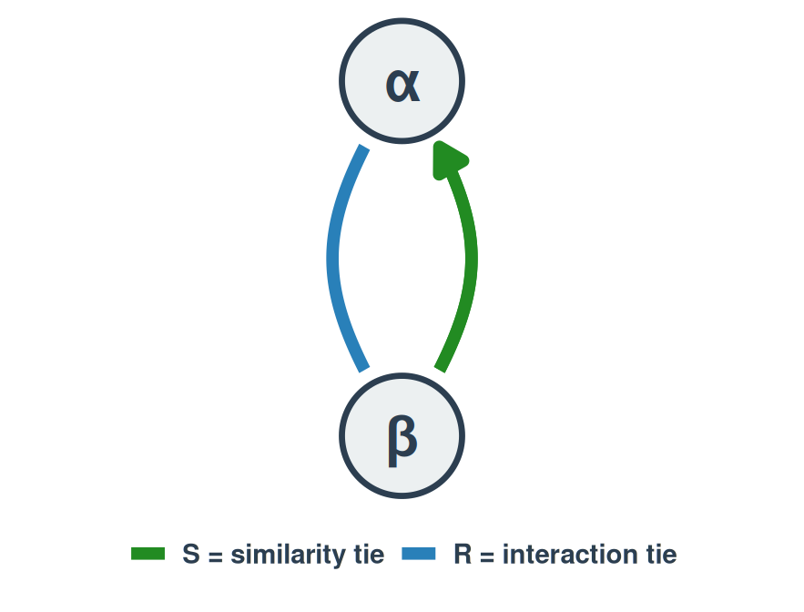
What Counts as Similarities and Interactions?
- Similarities
- Propinquity (same place).
- Homophily (same social category).
- Co-memberships (same social groups).
- Interactions
- Communicating with.
- Liking.
- Helping.
- Reference: Borgatti, S. P., Mehra, A., Brass, D. J., & Labianca, G. (2009). Network analysis in the social sciences. Science, 323(5916), 892–895.
Worked Example: Spending Time and Liking
- Balanced: Simbi and Keryl spend time together and like each other.
- Similarity and interaction point the same way.
- Unbalanced: Simbi and Keryl spend time together, but the liking is one-sided.
- A similarity paired with a missing or hostile interaction creates tension.
- Balance theory predicts the tension gets resolved: the liking becomes mutual, or the time spent together dries up.
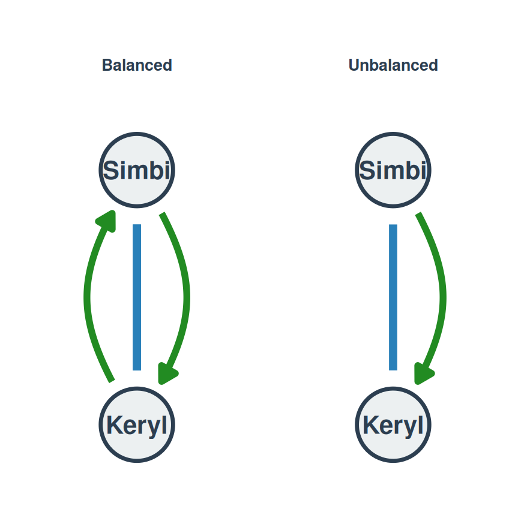
- Solid green: liking (directed). Blue: spend time with (symmetric).
Worked Example: Same Groups and Helping
- Balanced: Simbi and Keryl belong to the same groups and help each other.
- Unbalanced: They share group memberships, but the helping only flows one way.
- Same logic, different content: any symmetric similarity tie wants to be matched by reciprocal interaction ties.

- Solid green: help (directed). Blue: same group (symmetric).
The Cycle Runs Both Ways: From Interactions to Similarities
- After the first cycle of similarities leading to interactions, interactions can lead to further similarities: \(\alpha R \beta \rightarrow \alpha S \beta\).
- People tend to think like (share the opinions and attitudes of) the people they interact with.
- People tend to adopt the same tastes and fashions as the people in the same organizations as them.
- People tend to spend time with the people they like.
- Similarities and interactions feed each other in a continuing loop.
Part 2: Signed Graphs
Signed Graphs
- Signed graphs are a special kind of graph featuring:
- One set of vertices \(V\).
- Two disjoint sets of edges:
- Positive links (\(E^+\)).
- Negative links (\(E^-\)).
- The graph is written \(G = \{V, E^+, E^-\}\).
- Two sets are disjoint when they don’t share any members (their intersection is the empty set \(\emptyset\)).
- Signed graphs can be either directed or undirected.
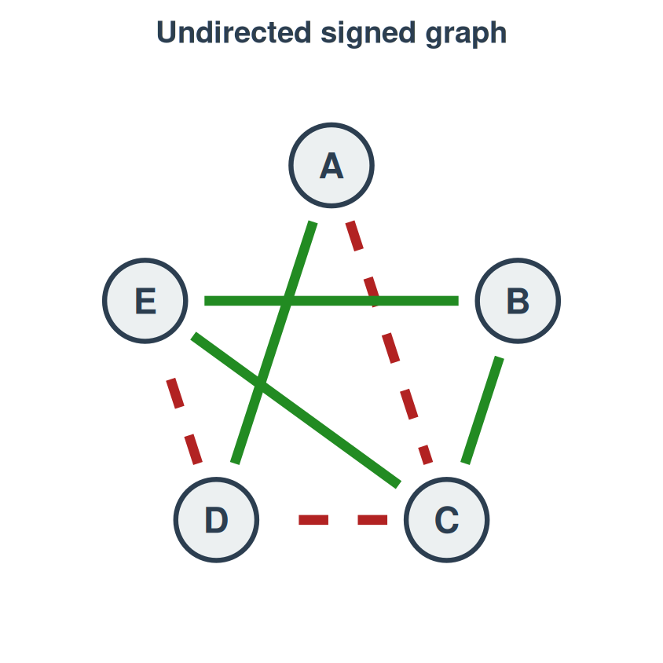
Part 3: Triadic Balance Theory
Balance Theory
- Balance theory is a social psychological theory designed to explain expected triadic configurations in sentiment networks.
- Sentiment networks are built from valenced ties (e.g., positive or negative).
- There are four building blocks in balance theory.
Building Block 1: A Person (P)
- The person (P).
- We “look” at the triad from this person’s point of view.
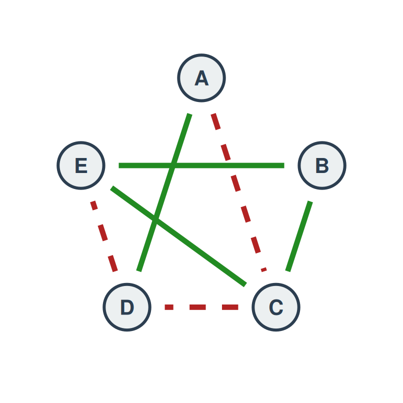
Building Block 2: An Object (O)
- An object (O) towards which the focal person has some kind of sentiment.
- The sentiment can be positive or negative.
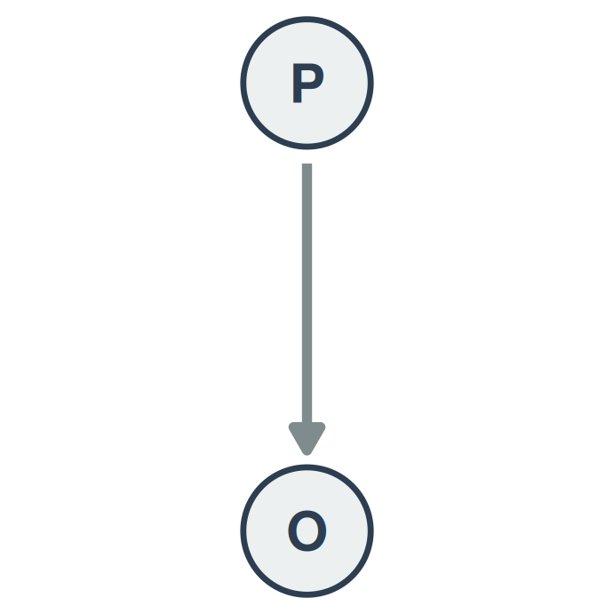
Building Block 3: A Third Party (Q)
- A third party (Q) towards which both the person and the other also have some kind of sentiment.
- Q does not have to be a real person! It could be any object.

Building Block 4: Directed Signed Edges
- A set of directed signed edges indicating positive (solid green) or negative (dashed red) sentiments:
- From P to O.
- From P to Q.
- From O to Q.
- This configuration reads: Person (P) likes Other (O); Other (O) likes the third party (Q); but Person (P) dislikes the third party.
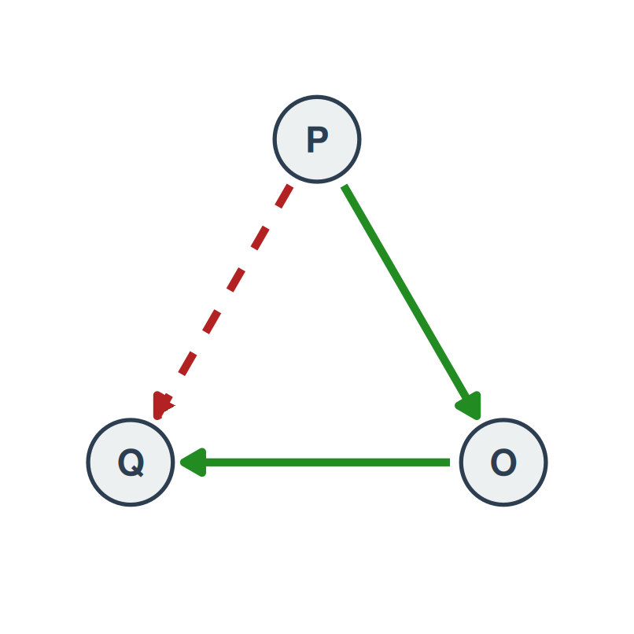
The Triad in Everyday Terms

- Sounds dicey!
- You (P) have a friend (O) who likes another classmate (Q) whom you dislike.

- Everything’s fine!
- You (P) have a friend (O) who likes another classmate (Q) whom you also like.
The Triad in Everyday Terms (continued)

- Seems fine?
- You (P) have an enemy (O) who likes another classmate (Q) whom you also dislike.

- Trouble in paradise!
- You (P) love Marvel movies (Q), but your long-time partner O (whom you like, duh!) hates them.
The Eight Configurations
- There are eight (8) configurations, featuring one-way directed links from:
- Person (P) to Other (O).
- Person (P) to Third Party (Q).
- Other (O) to Third Party (Q).
- Four of them are balanced; four are unbalanced.
Balanced Configurations
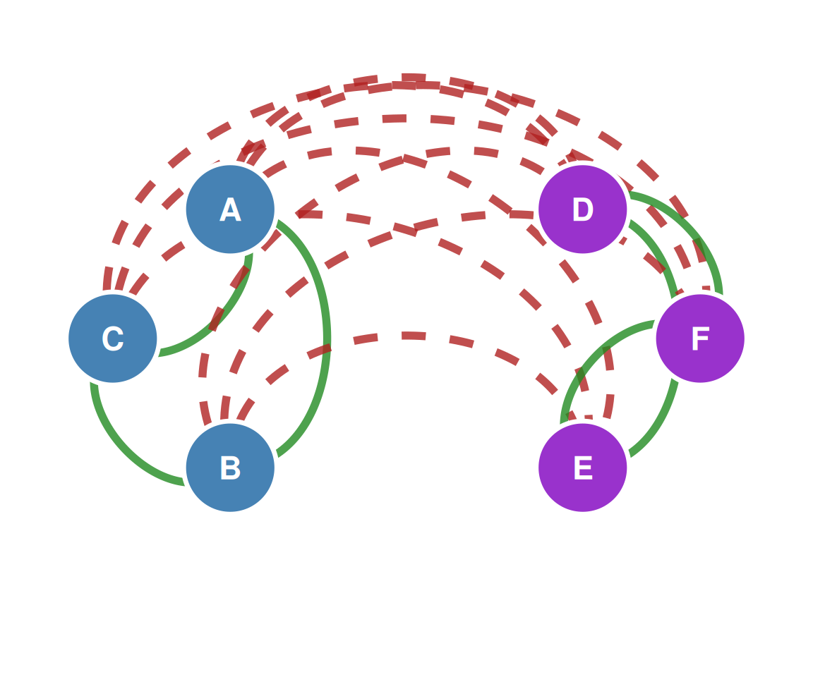
- In each balanced configuration, the sentiments cohere.
- “A friend of a friend is a friend.”
- “An enemy of an enemy is a friend.”
- “A friend of an enemy is an enemy.”
- “An enemy of a friend is an enemy.”
Unbalanced Configurations

- In each unbalanced configuration, the sentiments collide.
- “A friend of my friend is my enemy.”
- “An enemy of a friend is a friend.”
- “A friend of an enemy is a friend.”
- “An enemy of my enemy is also my enemy.”
Tension and Change
- The basic idea is that unbalanced configurations will tend to transition to balanced configurations.
- Unbalanced configurations produce tension in P, leading them to change their sentiments toward O or Q to generate balance.
- Balanced configurations are stable equilibrium states.
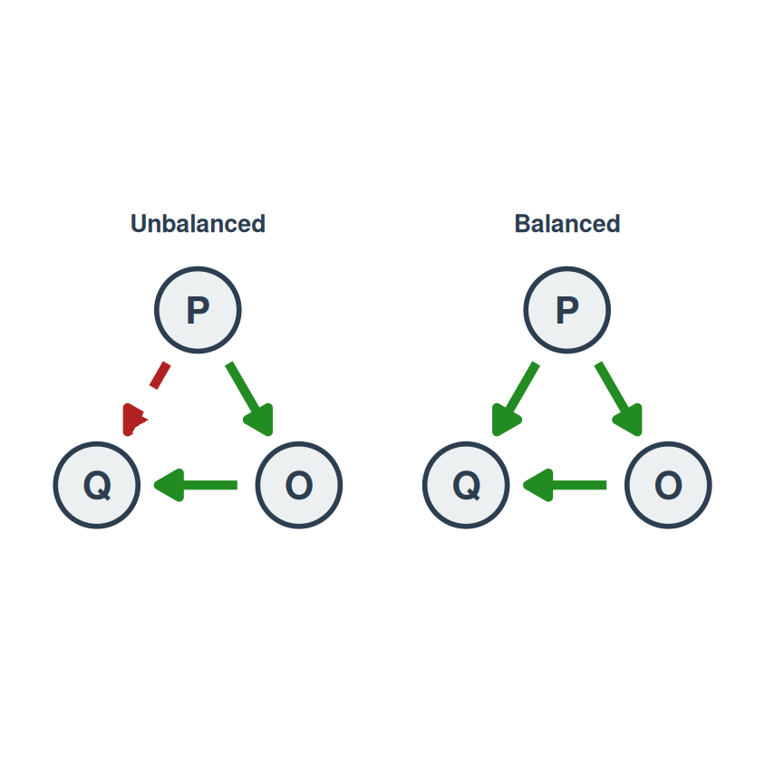
The Mathematics of Balance Theory
- Remember the rules of sign multiplication from basic algebra?
\[+1 \times +1 = +1 \qquad +1 \times -1 = -1 \qquad -1 \times -1 = +1\]
- They apply to balance theory!
Unbalanced Triads Have a Negative Product

- If you multiply the signs of the edges of each unbalanced triad, you get a negative number. Try it!
- \((+1_{PO}) \times (+1_{OQ}) \times (-1_{PQ}) = -1_{POQ}\)
- \((+1_{PO}) \times (-1_{OQ}) \times (+1_{PQ}) = -1_{POQ}\)
- \((-1_{PO}) \times (+1_{OQ}) \times (+1_{PQ}) = -1_{POQ}\)
- \((-1_{PO}) \times (-1_{OQ}) \times (-1_{PQ}) = -1_{POQ}\)
Balanced Triads Have a Positive Product
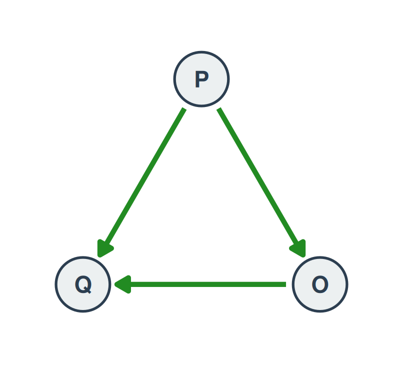
- Conversely, if you multiply the signs of the edges of each balanced triad, you get a positive number.
- \((-1_{PO}) \times (+1_{OQ}) \times (-1_{PQ}) = +1_{POQ}\)
- \((+1_{PO}) \times (-1_{OQ}) \times (-1_{PQ}) = +1_{POQ}\)
- \((-1_{PO}) \times (-1_{OQ}) \times (+1_{PQ}) = +1_{POQ}\)
- \((+1_{PO}) \times (+1_{OQ}) \times (+1_{PQ}) = +1_{POQ}\)
A Link Between Mathematics and the Logic of Social Relations
- “A friend of a friend is a friend”: \(+1_{PO} \times +1_{OQ} \times +1_{PQ} = +1_{POQ}\)
- “An enemy of an enemy is a friend”: \(-1_{PO} \times -1_{OQ} \times +1_{PQ} = +1_{POQ}\)
- “A friend of an enemy is an enemy”: \(-1_{PO} \times +1_{OQ} \times -1_{PQ} = +1_{POQ}\)
- “An enemy of a friend is an enemy”: \(+1_{PO} \times -1_{OQ} \times -1_{PQ} = +1_{POQ}\)
- Every folk rule for balanced sentiment is a sign product equal to \(+1\).
Cross-Pressure
- Because we have multiple social relations, we are sometimes caught between worlds.
- This is called cross-pressure.
- Example: having two friends with different attitudes towards the same object.
- Balance theory predicts that P will have an ambivalent attitude toward the object.
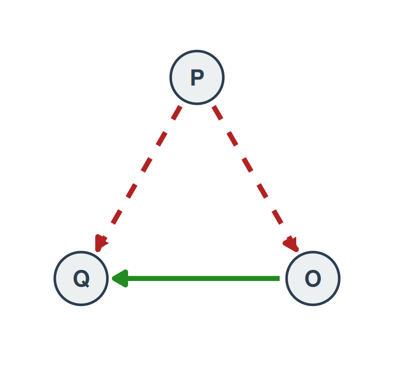
Resolving Cross-Pressure
- To achieve balance and remove the ambivalence, P can:
- Change their own attitude toward Friend 1 or Friend 2.
- Convince either Friend 1 or Friend 2 to change their attitude toward the object.
- The same tension-and-resolution logic that works triad by triad also works for whole networks. That is where we go next.
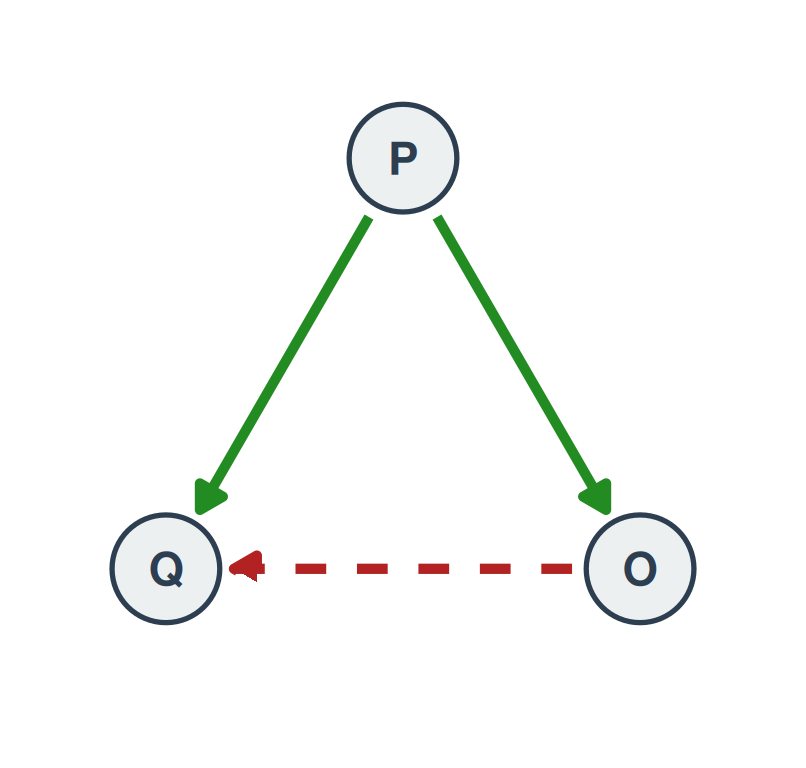
Part 4: Structural Balance
From Triadic Balance to Structural Balance
- If a triad is balanced, then it is so from every member’s point of view.
- We just need to change the interpretation!
- Take this balanced triad and rotate the “you” position around the triangle.
Rotating the “You” Position
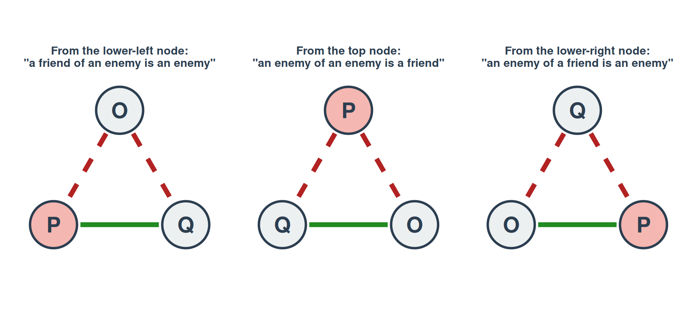
Balance as a Triad-Level Property, Regardless of Perspective
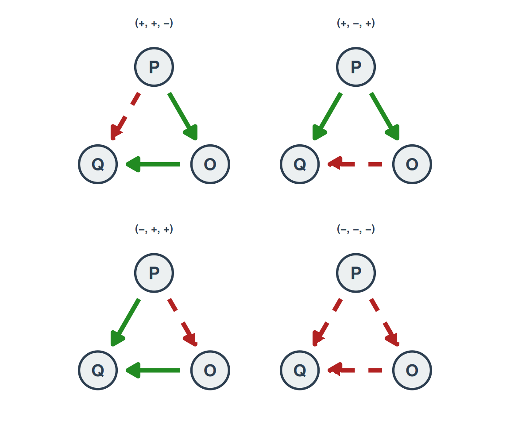
- This means we can define balance as a triad-level property regardless of “perspective.”
- For node A: “friends of enemies are enemies.”
- For nodes B and C: “enemies of friends are enemies.”
- The triad is balanced for everyone!
A Signed Graph with Named Edge Sets
- Here is a signed graph with its edge sets named explicitly:
- One set of vertices \(V = \{A, B, C, D, E, F\}\), so \(|V| = 6\).
- Positive links: \(E^+ = \{AC, AE, AF, CF, CE\}\), so \(|E^+| = 5\).
- Negative links: \(E^- = \{AB, BC, BD, CD, DF, EF\}\), so \(|E^-| = 6\).
- The graph is \(G = \{V, E^+, E^-\}\).

Building Its Adjacency Matrix, Step 1
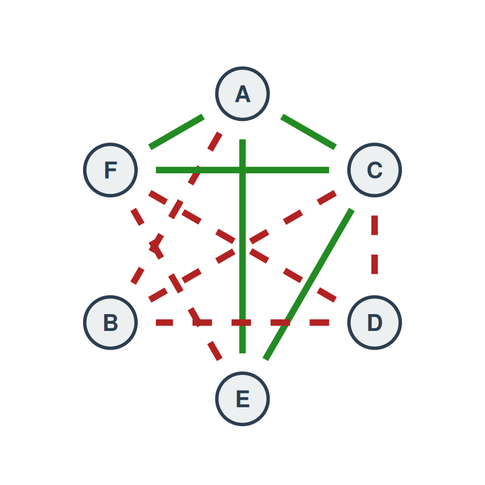
- The adjacency matrix of a signed graph works just like an ordinary adjacency matrix, except each entry records the sign of the tie.
- Step 1: draw the empty grid with
--on the diagonal.
| A | B | C | D | E | F | |
|---|---|---|---|---|---|---|
| A | -- | |||||
| B | -- | |||||
| C | -- | |||||
| D | -- | |||||
| E | -- | |||||
| F | -- |
Building Its Adjacency Matrix, Step 2
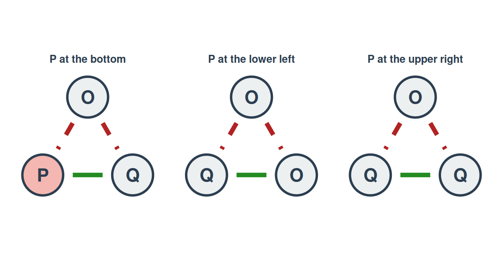
- Step 2: put a 1 where nodes are linked by a positive line.
| A | B | C | D | E | F | |
|---|---|---|---|---|---|---|
| A | -- | 1 | 1 | 1 | ||
| B | -- | |||||
| C | 1 | -- | 1 | 1 | ||
| D | -- | |||||
| E | 1 | 1 | -- | |||
| F | 1 | 1 | -- |
Building Its Adjacency Matrix, Step 3
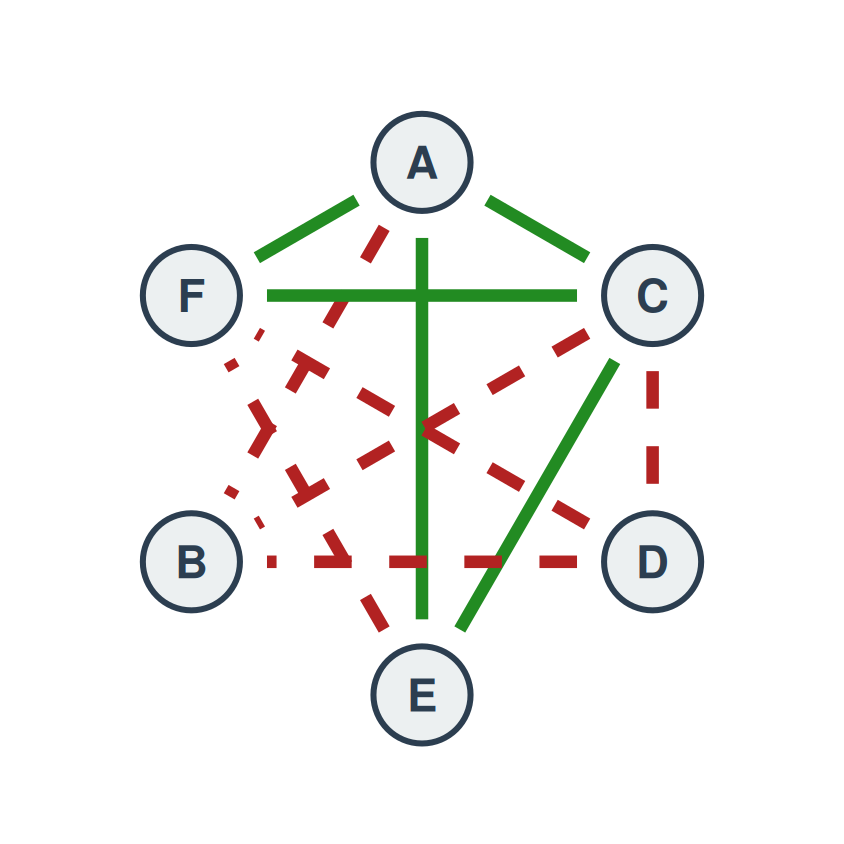
- Step 3: put a −1 where nodes are linked by a negative line, and a 0 where nodes are not adjacent.
| A | B | C | D | E | F | |
|---|---|---|---|---|---|---|
| A | -- | -1 | 1 | 0 | 1 | 1 |
| B | -1 | -- | -1 | -1 | 0 | 0 |
| C | 1 | -1 | -- | -1 | 1 | 1 |
| D | 0 | -1 | -1 | -- | 0 | -1 |
| E | 1 | 0 | 1 | 0 | -- | -1 |
| F | 1 | 0 | 1 | -1 | -1 | -- |
Symmetric Cells Have the Same Value
| A | B | C | D | E | F | |
|---|---|---|---|---|---|---|
| A | -- | -1 | 1 | 0 | 1 | 1 |
| B | -1 | -- | -1 | -1 | 0 | 0 |
| C | 1 | -1 | -- | -1 | 1 | 1 |
| D | 0 | -1 | -1 | -- | 0 | -1 |
| E | 1 | 0 | 1 | 0 | -- | -1 |
| F | 1 | 0 | 1 | -1 | -1 | -- |
- Because the graph is undirected, the matrix is a symmetric valued matrix: symmetric cells have the same value!
- For example \(a_{1,3} = a_{3,1} = 1\) (the positive A–C link).
- And \(a_{2,4} = a_{4,2} = -1\) (the negative B–D link).
Structural Balance Applies to Complete Signed Graphs
- Structural Balance Theory applies to complete signed graphs.
- A complete signed graph is a graph in which every node is connected to every other by either a positive line or a negative line.
- No zeros anywhere off the diagonal.
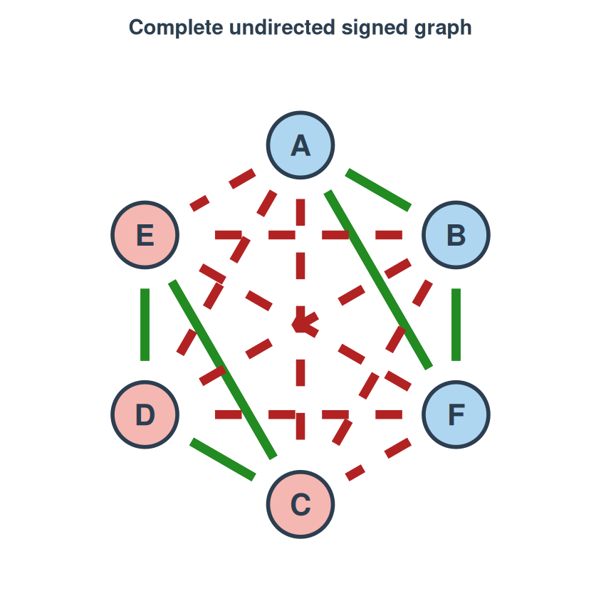
The Complete Signed Graph as a Matrix
| A | B | F | C | D | E | |
|---|---|---|---|---|---|---|
| A | -- | 1 | 1 | -1 | -1 | -1 |
| B | 1 | -- | 1 | -1 | -1 | -1 |
| F | 1 | 1 | -- | -1 | -1 | -1 |
| C | -1 | -1 | -1 | -- | 1 | 1 |
| D | -1 | -1 | -1 | 1 | -- | 1 |
| E | -1 | -1 | -1 | 1 | 1 | -- |
- Every off-diagonal cell is filled: \(+1\) within each group, \(-1\) between the groups.
- Every one of the \(\binom{6}{3} = 20\) triples is a triad we can check.
Balance as a Whole-Network Property
- When a whole signed graph only contains balanced triads, then the graph is also balanced.
- Balance can be a whole-network property!
- A signed graph in which every triple is balanced is called a balanced signed graph.
- Checking twenty triads by hand sounds tedious — there is a shortcut.
The Triad-Checking Shortcut
- Trick: a triad is balanced if it has either zero or two negative links.
- A triad is unbalanced if the number of negative links is odd (one or three).
- This follows directly from sign multiplication: the product of the edge signs is positive exactly when an even number of them is negative.
Checking the Complete Graph, Triad by Triad

- ABF triad: three positive links. Balanced!
- ABC triad: one positive (A–B), two negative. Balanced!
- CDF triad: C–D positive, C–F and D–F negative. Balanced!
- BEF triad: B–F positive, B–E and E–F negative. Balanced!
- ACE triad: A–C and A–E negative, C–E positive. Balanced!
- And so on for all the triads. Every one checks out.
The Fundamental Theorem of Structural Balance
- The fundamental theorem of structural balance was discovered by the mathematicians Dorwin Cartwright and Frank Harary in 1956.
- It states that when a graph is balanced, it can be split into two groups such that there are:
- Only positive links within groups.
- Only negative links between groups.
- Balance is not necessarily good! Structural balance is equivalent to perfect group polarization.
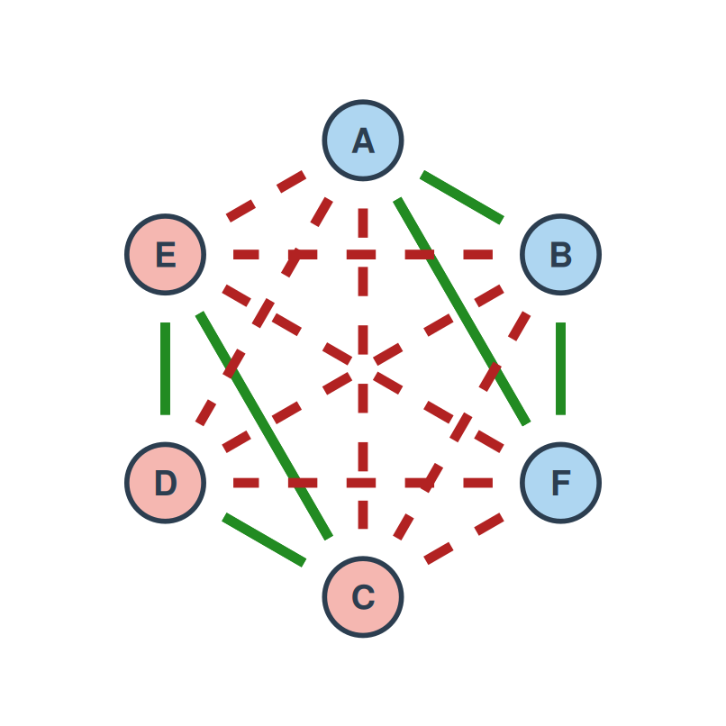
Seeing the Blocks: Reorder the Matrix
| A | B | F | C | D | E | |
|---|---|---|---|---|---|---|
| A | -- | 1 | 1 | -1 | -1 | -1 |
| B | 1 | -- | 1 | -1 | -1 | -1 |
| F | 1 | 1 | -- | -1 | -1 | -1 |
| C | -1 | -1 | -1 | -- | 1 | 1 |
| D | -1 | -1 | -1 | 1 | -- | 1 |
| E | -1 | -1 | -1 | 1 | 1 | -- |
- We can see the two-group structure if we rearrange the rows and columns of the signed adjacency matrix.
- Put the friends of A first (A, B, F), then the enemies of A (C, D, E).
The Block-Diagonal Structure
| A | B | F | C | D | E | |
|---|---|---|---|---|---|---|
| A | -- | 1 | 1 | -1 | -1 | -1 |
| B | 1 | -- | 1 | -1 | -1 | -1 |
| F | 1 | 1 | -- | -1 | -1 | -1 |
| C | -1 | -1 | -1 | -- | 1 | 1 |
| D | -1 | -1 | -1 | 1 | -- | 1 |
| E | -1 | -1 | -1 | 1 | 1 | -- |
- In the reordered matrix the positives cluster into two blocks on the diagonal.
- The off-diagonal blocks are all negative.
- This is the matrix signature of perfect polarization: two camps, positive inside, hostile across.
Structural Balance in Everyday Life
- P (a liberal retweeter), O (a liberal tweeter), Q (a liberal tweet):
- All sentiments positive. A balanced triad.
- P (a conservative retweeter), O (a conservative tweeter), Q (a conservative tweet):
- Also all positive. Another balanced triad.
- P (a liberal retweeter), O (a conservative tweeter), Q (a conservative tweet):
- Negative sentiments all around. An unbalanced triad.
- In a balanced platform, liberal accounts retweet liberal content and conservative accounts retweet conservative content, and each side disparages the other’s.
- Balance at the triad level aggregates into echo chambers at the network level.
Adding New Nodes Preserves the Polarization Pattern
- Adding new nodes to the structure does not change the group polarization pattern, as long as their relationships to every other node are balanced.
- New nodes H and I (yellow) join.
- I makes friends with C, D, and E.
- H makes friends with A, B, and F.
- Then they balance out the rest of the relationships with the other side.
- Still polarized!
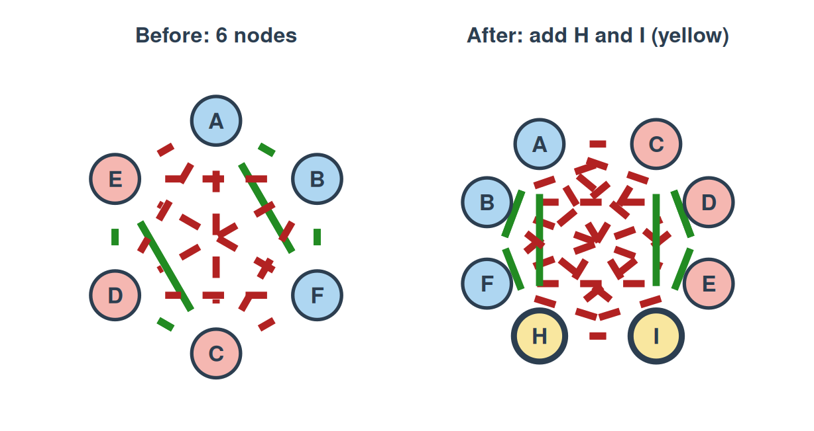
Properties of Balanced Signed Graphs
- Balanced signed graphs have some interesting properties. If a graph \(G\) is balanced:
- Any subgraph of \(G\) is also balanced.
- All paths between the same pair of nodes have the same sign as the link between them.
- Cycles of any length are always positive (an even number of negative edges).
- Each panel below shows the full graph \(G\); the highlighted triad is the subgraph being checked.
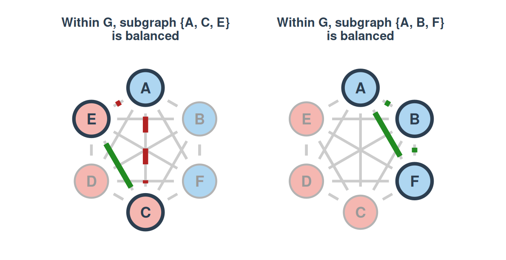
The Sign of a Path
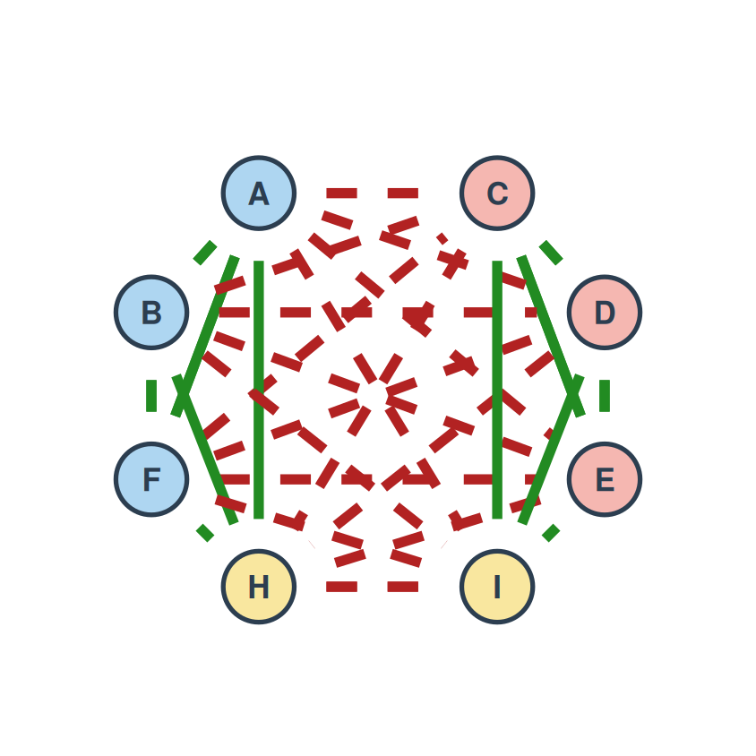
- The sign of a path is the product of the signs of each edge in it.
- \(F\) and \(I\) have a negative connection.
- All paths connecting F and I are negative:
- F–B–A–C–I: \((+1)(+1)(-1)(+1) = -1\)
- F–B–E–I: \((+1)(-1)(+1) = -1\)
- Positively connected nodes like E and C have all positive paths:
- E–I–C: \((+1)(+1) = +1\)
- E–D–C: \((+1)(+1) = +1\)
Cycles Are Always Positive
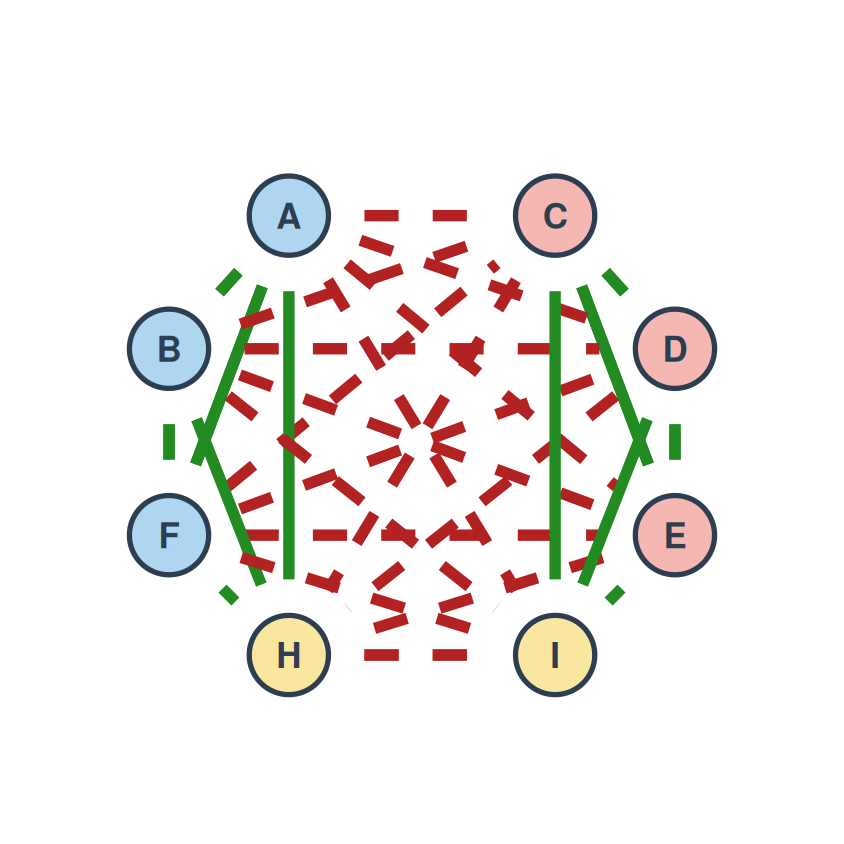
- In a balanced signed graph, cycles of any length are always positive.
- 3-cycle A–C–B: \((-1)(-1)(+1) = +1\)
- 5-cycle A–C–D–E–B: \((-1)(+1)(+1)(-1)(+1) = +1\)
- Equivalent statement: every cycle contains an even number of negative edges.
Part 5: From Balance to Clustering
Clustering Is a Weaker Criterion Than Balance
- Balance demands two groups. But real signed networks often have more than two clusters.
- Davis’s insight: clustering is a weaker criterion than balance.
- A signed graph is clusterable when we can partition the nodes into clusters such that:
- Positive links fall within clusters.
- Negative links fall between clusters.
- The all-negative triad — unbalanced under strict balance — is now allowed.
Building a Clusterable Network, Step 1: Positive Links Within Clusters
- Suppose we build a network whose triangles come in only three types:
- All-positive triads (everybody inside a cluster likes everybody else in it).
- Two-negative triads (two cluster-mates against an outsider).
- All-negative triads (one node from each of three clusters).
- Step 1: draw the positive links inside each of three clusters: \(\{a, d, e\}\), \(\{c, g, i\}\), and \(\{b, f, h\}\).
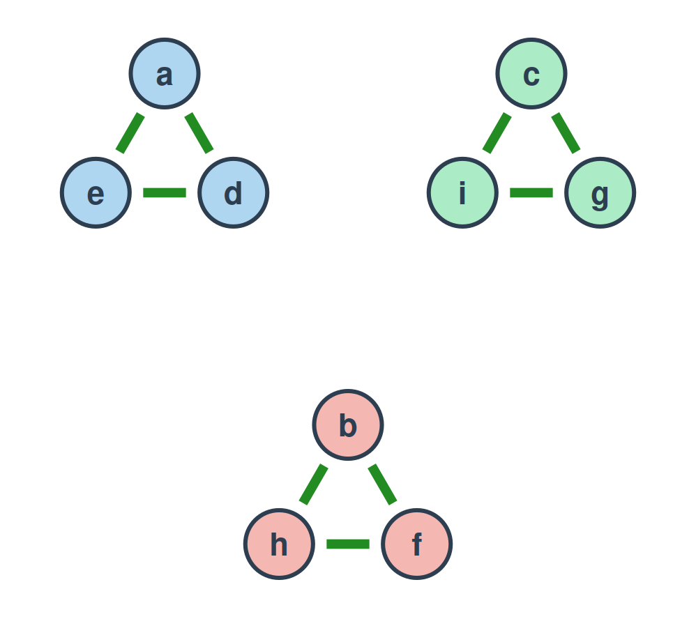
Building a Clusterable Network, Step 2: Negative Links Between Clusters
- Step 2: connect every pair of nodes in different clusters with a negative link.
- Every cluster is now a positive island in a sea of negatives.
- The graph is complete: every pair of nodes is tied, positively or negatively.
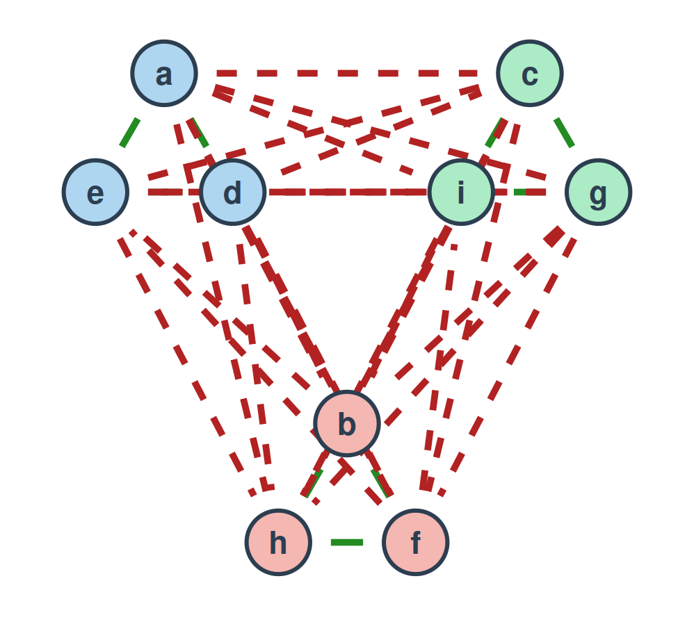
The Adjacency Matrix of the Clusterable Network
| a | b | c | d | e | f | g | h | i | |
|---|---|---|---|---|---|---|---|---|---|
| a | -- | -1 | -1 | 1 | 1 | -1 | -1 | -1 | -1 |
| b | -1 | -- | -1 | -1 | -1 | 1 | -1 | 1 | -1 |
| c | -1 | -1 | -- | -1 | -1 | -1 | 1 | -1 | 1 |
| d | 1 | -1 | -1 | -- | 1 | -1 | -1 | -1 | -1 |
| e | 1 | -1 | -1 | 1 | -- | -1 | -1 | -1 | -1 |
| f | -1 | 1 | -1 | -1 | -1 | -- | -1 | 1 | -1 |
| g | -1 | -1 | 1 | -1 | -1 | -1 | -- | -1 | 1 |
| h | -1 | 1 | -1 | -1 | -1 | 1 | -1 | -- | -1 |
| i | -1 | -1 | 1 | -1 | -1 | -1 | 1 | -1 | -- |
- Positives (\(+1\), green) sit inside each of the three clusters; negatives (\(-1\), red) sit between them.
- Triads entirely within a cluster are all-positive; triads spanning two clusters have two negatives; triads spanning all three are all-negative.
- In alphabetical order, though, the matrix looks like noise: the green cells are scattered, with no visible pattern.
Davis Shows That the Graph Has Three Clusters
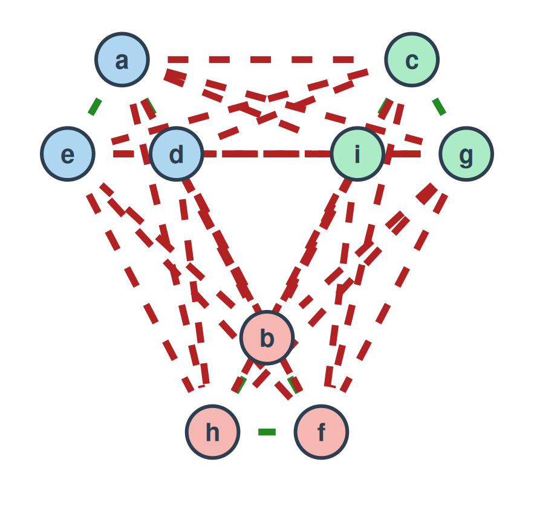
- Davis shows that the nodes partition into three clusters:
- Cluster 1: \(\{a, d, e\}\)
- Cluster 2: \(\{c, g, i\}\)
- Cluster 3: \(\{b, f, h\}\)
- Positive links within clusters, negative links between them.
- The all-negative triads (like \(\{a, b, c\}\), one node from each cluster) are what keep this from being strictly balanced — but it is perfectly clusterable.
The Cluster Structure in the Reordered Matrix
| a | d | e | c | g | i | b | f | h | |
|---|---|---|---|---|---|---|---|---|---|
| a | -- | 1 | 1 | -1 | -1 | -1 | -1 | -1 | -1 |
| d | 1 | -- | 1 | -1 | -1 | -1 | -1 | -1 | -1 |
| e | 1 | 1 | -- | -1 | -1 | -1 | -1 | -1 | -1 |
| c | -1 | -1 | -1 | -- | 1 | 1 | -1 | -1 | -1 |
| g | -1 | -1 | -1 | 1 | -- | 1 | -1 | -1 | -1 |
| i | -1 | -1 | -1 | 1 | 1 | -- | -1 | -1 | -1 |
| b | -1 | -1 | -1 | -1 | -1 | -1 | -- | 1 | 1 |
| f | -1 | -1 | -1 | -1 | -1 | -1 | 1 | -- | 1 |
| h | -1 | -1 | -1 | -1 | -1 | -1 | 1 | 1 | -- |
- Same matrix, with rows and columns reordered cluster by cluster: \(\{a, d, e\}\), \(\{c, g, i\}\), \(\{b, f, h\}\).
- Reordering exposes three positive blocks on the diagonal.
- Every off-diagonal block is negative.
- Balance gives two camps; clusterability generalizes the same logic to any number of clusters.